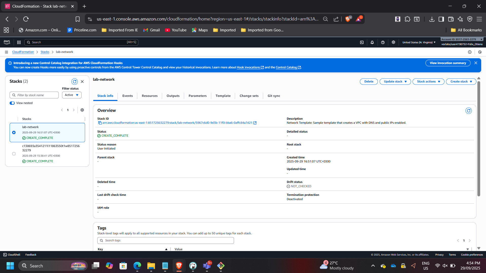
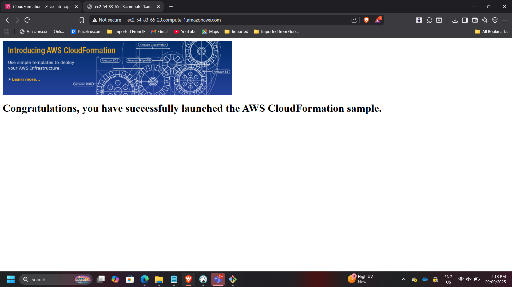
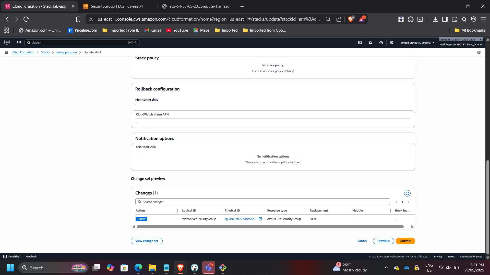
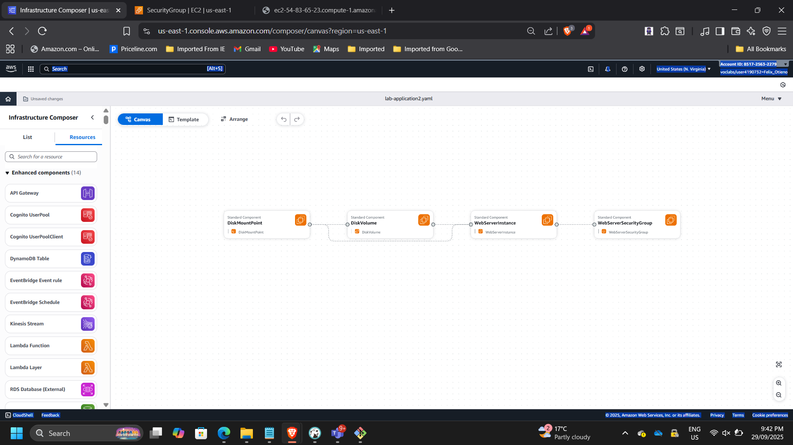
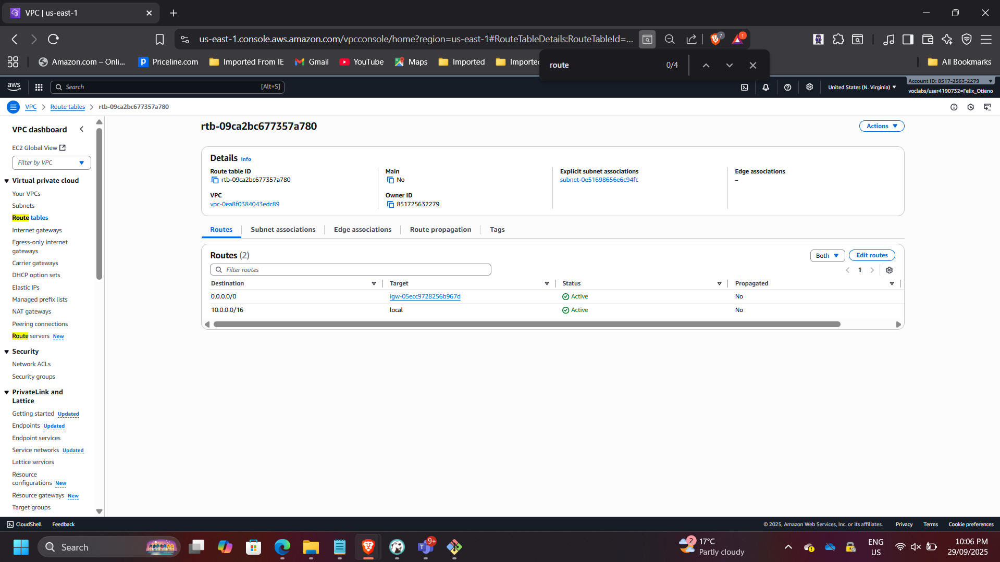
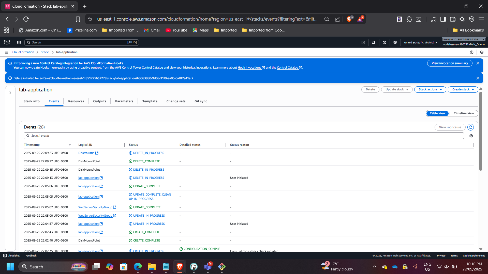

Automating Infrastructure Deployment Using AWS CloudFormation
Project: Enterprise Infrastructure Automation with AWS CloudFormation
Timeline: September 2025
Role: Solutions Architect (Infrastructure as Code & Automation)
Skills: AWS CloudFormation, Infrastructure as Code (IaC), VPC Architecture, EC2, Security Groups, Change Sets, Stack Updates, DeletionPolicy, Infrastructure Composer
Executive Summary
Designed and deployed a modular AWS environment using Infrastructure as Code (IaC) with AWS CloudFormation.
This project demonstrates how enterprise infrastructure can be provisioned using reusable templates, structured into independent networking and application layers, updated safely using Change Sets, and governed through lifecycle policies.
The implementation eliminates manual configuration risk and enables repeatable, production-ready deployments aligned with DevOps and governance best practices.
Business Context
Manual infrastructure deployment introduces configuration drift, inconsistent environments, human error, and poor lifecycle management.
The objective of this initiative was to:
- Separate networking and application layers
- Enable controlled infrastructure updates
- Preserve critical resources during deletion
- Improve consistency through template-driven deployments
Architecture Overview
The deployment consisted of two independent CloudFormation stacks.
Networking Stack (lab-network)
Provisioned:
- VPC
- Public Subnet
- Internet Gateway
- Route Tables
- Route Associations
Exports:
- VPC ID
- Subnet ID
Application Stack (lab-application)
Provisioned:
- EC2 instance
- Security Group
- Web server configuration
- Cross-stack reference to VPC and Subnet

Deploying the Networking Layer
Deployed lab-network.yaml template.
Verified:
- Stack status: CREATE_COMPLETE
- Resources provisioned successfully
- Outputs exported correctly


This demonstrates modular stack separation and reusable network foundations.
Deploying the Application Layer
Deployed lab-application.yaml, which referenced networking outputs.
Provisioned:
- EC2 instance within VPC
- Security Group allowing HTTP (port 80)
Verified:
- Stack status: CREATE_COMPLETE
- Application accessible via public URL



This demonstrates cross-stack dependency management using exported values.
Controlled Stack Update Using Change Sets
Updated the application stack using lab-application2.yaml.
Modification introduced:
- HTTPS (port 443) added to Security Group inbound rules
Previewed changes before execution using Change Sets.

Before update:
- Port 80 allowed
After update:
- Ports 80 and 443 allowed

This demonstrates safe infrastructure evolution without redeploying unaffected resources.
Infrastructure Visualization
Used AWS Infrastructure Composer to validate:
- VPC associations
- Subnet routing
- Internet Gateway connectivity
- Route table relationships
Verified that the Public Route Table includes 0.0.0.0/0 → IGW and is properly associated with the Public Subnet.


Lifecycle-Aware Stack Deletion
Deleted the lab-application stack.
Because the template included:
DeletionPolicy: Snapshot
CloudFormation created an EBS snapshot before deletion.
Verified:
- Stack status: DELETE_COMPLETE
- Snapshot retained
- Networking stack unaffected


This demonstrates governance-aware infrastructure teardown procedures.
Architectural Impact
This project demonstrates enterprise-grade Infrastructure as Code implementation using AWS CloudFormation to:
- Automate multi-layer infrastructure provisioning
- Enable controlled infrastructure updates
- Preserve critical data during teardown
- Improve deployment consistency and reliability
The solution aligns with DevOps automation principles and modern cloud governance standards.